Características do Bioma
A Caatinga é um bioma único, exclusivamente brasileiro, caracterizado por sua vegetação adaptada ao clima semiárido. O nome "Caatinga" vem do tupi-guarani e significa "mata branca", referência ao aspecto esbranquiçado da vegetação durante a época de seca.
Clima e Solo
Clima Semiárido
Temperaturas médias entre 25°C e 29°C, com baixa umidade relativa do ar durante grande parte do ano.
Baixa Pluviosidade
Chuvas irregulares entre 300mm e 800mm anuais, concentradas em poucos meses do ano.
Solo Variado
Predominam solos rasos, pedregosos e ricos em minerais, mas pobres em matéria orgânica.
Flora da Caatinga
A vegetação da Caatinga é extremamente adaptada às condições de seca prolongada, com mais de 1.000 espécies de plantas vasculares, sendo muitas endêmicas do bioma.
Adaptações Especiais
As plantas da Caatinga desenvolveram características xerófilas: folhas miúdas, cascas grossas, espinhos para reduzir perda de água, raízes profundas, e troncos que acumulam água. Essas estratégias evitam a evapotranspiração intensa e possibilitam o armazenamento de água durante os meses de seca.
🌵 Cactos e Suculentas
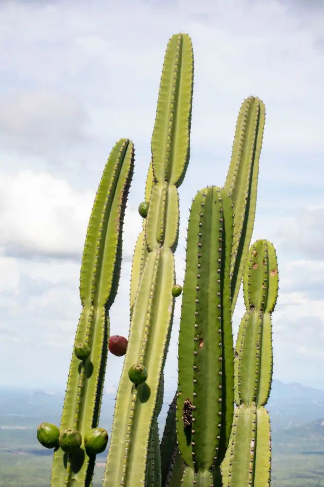Mandacaru, xique-xique, coroa-de-frade e facheiro. Armazenam água e possuem espinhos para proteção
🌳 Árvores Típicas

Juazeiro (que não perde folhas na seca), aroeira, umbuzeiro, baraúna e catingueira. Muitas perdem folhas no período seco.
🌿 Arbustos

Jurema-preta, marmeleiro, mofumbo e calumbi. Formam vegetação densa em algumas áreas.
🌸 Bromélias
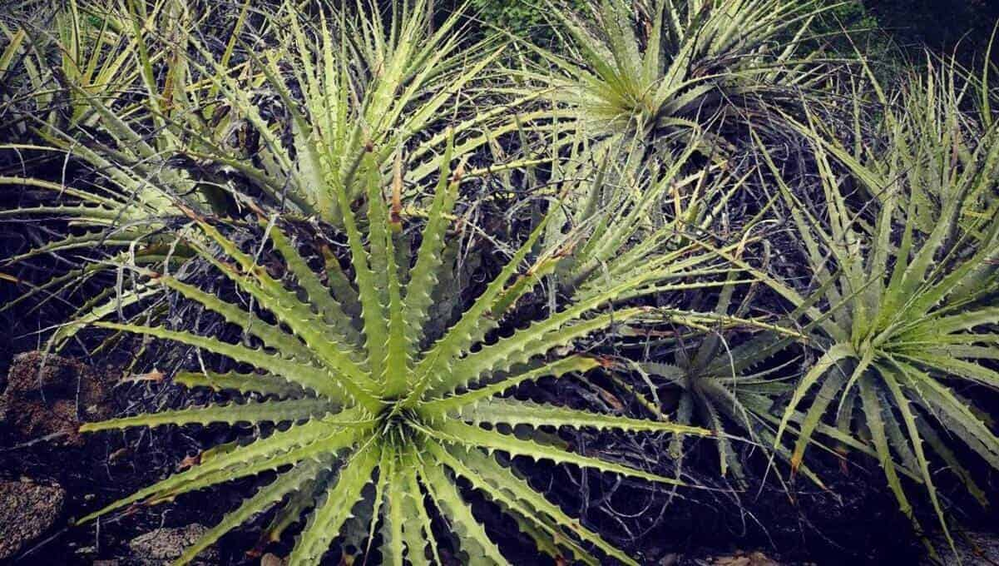Macambira e outras espécies que acumulam água e servem de refúgio para fauna.
Curiosidade: A flora possui três estratos: arbóreo, arbustivo e herbáceo, formando uma estrutura resistente e adaptada às condições áridas.
Fauna da Caatinga
A fauna da Caatinga é bastante diversificada, com aproximadamente 1.824 espécies de animais entre vertebrados e invertebrados, incluindo cerca de 178 espécies de mamíferos, mais de 200 espécies de aves, 97 espécies de répteis e 45 espécies de anfíbios.
Mamíferos
🦊 Raposa-do-nordeste
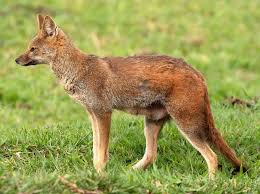Pequeno canídeo endêmico, adaptado ao clima seco da região.
🐆 Onça-parda
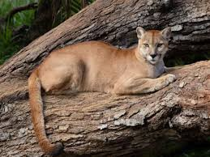Predador de topo, ameaçado pela perda de habitat.
🦝 Gato-do-mato
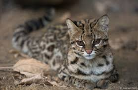Felino de pequeno porte com hábitos noturnos.
🦌 Veado-catingueiro
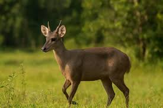Menor veado brasileiro, bem adaptado ao ambiente.
Aves
🦜 Arara-azul-de-lear
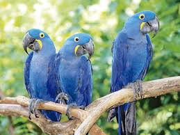Espécie endêmica e criticamente ameaçada, símbolo da conservação da Caatinga.
🕊️ Asa-branca
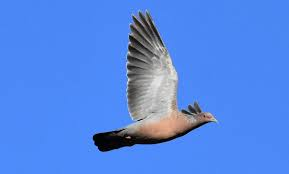Ave símbolo do Nordeste, imortalizada em canções populares.
🦅 Gavião-carijó
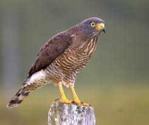Predador comum nas áreas de caatinga.
🐦 Periquito-da-caatinga
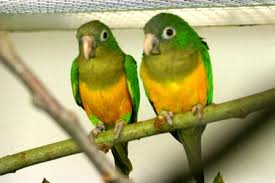Pequeno psitacídeo endêmico da região.
Répteis e Outros
🦎 Lagartos

79 espécies de lagartos registradas no bioma, incluindo o lagarto-teiú.
🐍 Serpentes
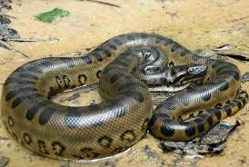114 espécies de serpentes, incluindo jiboias e cobras-coral.
🐝 Abelhas Nativas
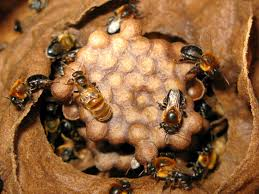187 espécies de abelhas, incluindo uruçus sem ferrão.
🐟 Peixes
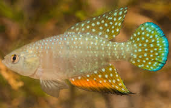240 espécies de peixes adaptadas aos rios intermitentes.
Destaque: Cerca de 20 espécies de anfíbios são endêmicas da Caatinga, demonstrando a singularidade desse bioma.
Localização Geográfica
A Caatinga ocupa uma área de 862.818 km², equivalente a 10,1% do território nacional, e encontra-se inteiramente dentro do Brasil, sendo o único bioma exclusivamente brasileiro.
Estados Abrangidos
O bioma está presente em 10 estados brasileiros, ocupando a maior parte do sertão nordestino.

- 🔹 Bahia - Maior porção do bioma
- 🔹 Ceará - Quase totalidade do estado
- 🔹 Pernambuco - Interior do estado
- 🔹 Piauí - Região sul e central
- 🔹 Paraíba - Maior parte do território
- 🔹 Rio Grande do Norte - Interior
- 🔹 Alagoas - Sertão alagoano
- 🔹 Sergipe - Região oeste
- 🔹 Maranhão - Sul do estado
- 🔹 Minas Gerais - Norte mineiro
Total de municípios: 1.095 municípios brasileiros têm a Caatinga como bioma predominante.
Mudanças Climáticas e Seus Impactos
A Caatinga é um dos biomas brasileiros mais vulneráveis às mudanças climáticas. O aumento de temperatura e as alterações nos padrões de precipitação já estão causando impactos significativos no ecossistema e nas comunidades que dependem dele.
⚠️ Alerta Crítico
Cerca de 62% das áreas susceptíveis à desertificação no Brasil se encontram na Caatinga. O processo de desertificação pode ser irreversível, afetando permanentemente a capacidade do solo de sustentar vida.
Principais Impactos
Aumento de Temperatura
As temperaturas mais elevadas intensificam a evapotranspiração, reduzindo a disponibilidade de água e aumentando o estresse hídrico das plantas.
Desertificação Acelerada
Eventos climáticos extremos combinados com desmatamento e manejo inadequado do solo aceleram o processo de desertificação, que pode tornar-se irreversível.
Alteração no Regime de Chuvas
Mudanças nos padrões de precipitação tornam as secas mais longas e intensas, comprometendo rios intermitentes e o abastecimento das comunidades.
Perda de Biodiversidade
Espécies endêmicas enfrentam ameaça crescente devido à perda de habitat e às condições ambientais cada vez mais extremas.
Consequências Ambientais e Sociais
🌾 Agricultura e Segurança Alimentar
A desertificação prejudica a qualidade do solo, reduzindo sua capacidade produtiva e ameaçando a agricultura de subsistência das comunidades locais.
🔥 Degradação do Solo
Queimadas, excesso de animais criados soltos e derrubadas de árvores aceleram a degradação, reduzindo em mais de 50% a funcionalidade do solo.
💨 Redução do Sequestro de Carbono
Solos degradados perdem sua capacidade de sequestrar CO₂, contribuindo ainda mais para o agravamento das mudanças climáticas.
👥 Impacto nas Comunidades
A população que depende dos recursos naturais da Caatinga enfrenta desafios crescentes de acesso à água, alimentos e condições básicas de vida.
🌿 Adaptação e Resiliência
Apesar dos desafios, a Caatinga demonstra notável resistência e adaptabilidade. Suas espécies desenvolveram mecanismos únicos para sobreviver em condições extremas, tornando o bioma um modelo importante para estratégias de combate à desertificação e adaptação às mudanças climáticas em outras regiões do mundo.
Urgência: Apenas 1,5% do território da Caatinga está protegido em unidades de conservação de proteção integral, tornando urgente a ampliação das áreas protegidas e a implementação de políticas públicas eficazes para restauração e uso sustentável do bioma.
Importância e Conservação
Importância Ecológica
A Caatinga abriga uma biodiversidade única, com endemismo variando de 9% em aves até 57% em peixes, além de serviços ecossistêmicos essenciais para 27 milhões de brasileiros.
Biodiversidade Única
Patrimônio biológico que não existe em nenhuma outra região do mundo, com centenas de espécies endêmicas.
Recursos Hídricos
Importante para recarga de aquíferos e manutenção de rios intermitentes.
Cultura Local
Base da cultura sertaneja e sustento de populações tradicionais.
Recursos Naturais
Fornece madeira, alimentos, medicamentos e forragem para criação animal.
Ameaças e Desafios
- ⚠️ Desmatamento: Para agricultura, pecuária e extração de lenha
- ⚠️ Degradação do solo: Práticas inadequadas causam erosão e desertificação
- ⚠️ Caça ilegal: Ameaça espécies já vulneráveis
- ⚠️ Mudanças climáticas: Intensificam secas e eventos extremos
Ações para Conservação
🌳 Conservação
Apoiar unidades de conservação e recuperação de áreas degradadas.
📚 Educação
Conscientizar sobre a importância do bioma e suas espécies únicas.
🔬 Pesquisa
Investir em estudos sobre biodiversidade e uso sustentável.
🤝 Comunidades
Valorizar conhecimentos tradicionais e promover desenvolvimento sustentável.